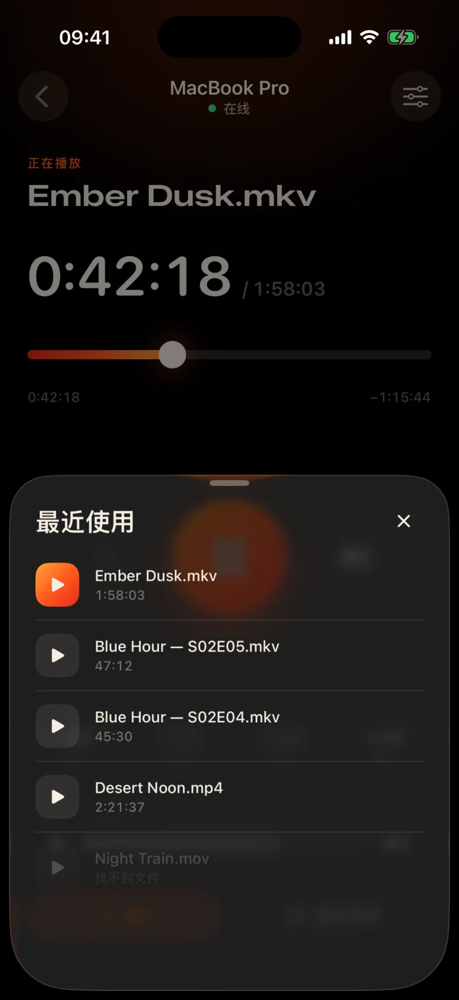
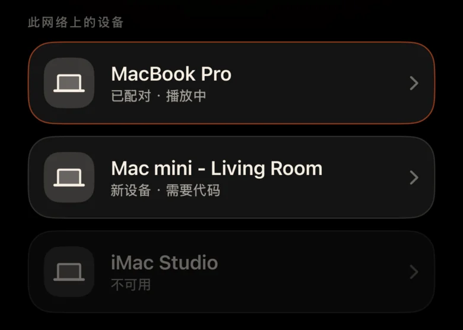
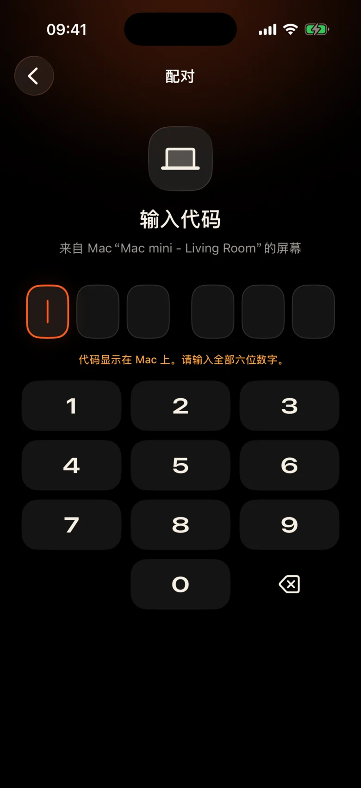

Mac 位于房间对面
它通过墙壁插入投影仪。每次停顿都意味着站起来，在黑暗中找到触控板，眯着眼睛看着一个小小的控制栏。
Kinrox：点击手中手机的暂停。
它通过墙壁插入投影仪。每次停顿都意味着站起来，在黑暗中找到触控板，眯着眼睛看着一个小小的控制栏。
Kinrox：点击手中手机的暂停。
一个场景中有人低语，下一个场景中爆炸——有人已经在隔壁房间睡着了。
Kinrox：拇指下方的音量滑块。
带有 IP 地址和密码的 Web 面板、休眠的浏览器选项卡、专为办公桌而不是沙发设计的按钮。
Kinrox：自行找到您的Mac，与一个代码配对。

大目标、黑暗温暖的主题以及每次按下时轻触的触觉。您可以在视线不离开影片的情况下使用它。
每个按钮都足够大，睡眼惺忪时也能轻松点中。
漏了一行吗？一键返回。跳过两个介绍。
Kinrox自己的音量，从0到100。Mac的系统音量保持不变。
同一文件夹中的上一个和下一个文件，按 Finder 顺序。
选择您之前看过的内容 - 它会在 Mac 上打开。
将时间线拖到任意时刻，从沙发上切换全屏。
没有 IP 地址、没有密码、没有帐户。第一个代码后，您的 iPhone 会自行重新连接。
将文件拖入 Kinrox 或按 ⌘ O。远程服务器默认处于开启状态。
当两个设备都使用同一 Wi-Fi 时，Kinrox 会自行显示。

Mac 显示的代码有效期为两分钟。尝试了三次错误，结果就消失了。


Alex’s iPhone 想要控制 Kinrox。请在手机上输入此代码。
 代码将在 1:47 后过期
代码将在 1:47 后过期
视频就是界面。当您需要时，会出现一层薄薄的玻璃，并在三秒钟后隐藏起来。

基于 libmpv（mpv 和 IINA 背后的引擎）构建。选择嵌入或外部音频和字幕。 VideoToolbox 处理硬件解码。
Kinrox 将文件夹中的视频排列起来，并在一集结束时开始下一个视频 - “2”在“10”之前，就像 Finder 一样。
键盘⏯键、控制中心和正在播放控制Kinrox。最多 20 个最近的文件在开始屏幕上等待。
您的 Mac 和 iPhone 直接通过本地网络交换播放命令。您的视频保留在 Mac 上。
通过 Bonjour 发现，仅来自您自己的子网的连接。公共地址和蜂窝电话均被拒绝。
每个命令都在加密通道中传输。配对令牌存在于两台设备上的钥匙串中。
X25519HKDF-SHA256ChaCha20-Poly1305没有帐户或使用情况分析。 Mac 每天检查公共更新源，无需唯一标识符或系统分析。该网站没有分析或 cookies。
遥控器看到的是标题和持续时间，而不是文件路径。在 Mac 上已解决打开最近的文件的问题。
Kinrox 写在 Swift 6 和 SwiftUI 上，写在 libmpv 之上。播放器、遥控器和协议的每一行都在GitHub上。
从源代码构建# Xcode 26.5, XcodeGen and mpv from Homebrew
brew install xcodegen mpv pkg-config
git clone https://github.com/awaik/Kinrox.git
cd Kinrox
cp -n Config/Signing.local.xcconfig.example \
Config/Signing.local.xcconfig
# Set your team: docs/runbooks/RUNBOOK-BUILD-AND-SIGNING.md
./Scripts/check-env.sh
./Scripts/generate.sh
xcodebuild -workspace Kinrox.xcworkspace \
-scheme PlayerMac -configuration Debug \
-destination 'platform=macOS,arch=arm64' \
-derivedDataPath DerivedData build
open DerivedData/Build/Products/Debug/Kinrox.app当 Mac 和 iPhone 共享 Wi‑Fi 网络时，无需连接互联网即可进行播放和远程控制。 Mac 使用 HTTPS 进行日常更新检查，并在您选择安装时下载更新。
是的。 Kinrox 可在 Mac 显示的任何内容上播放 - 投影仪、通过 HDMI 的电视或与 AirPlay 连接的显示器。
Macs 和 Apple silicon 在 macOS 14 Sonoma 或更高版本上，以及 iPhones 在 iOS 17 或更高版本上。尚不支持 Intel Macs。
是的。每个 iPhone 与自己的代码配对一次；最多可同时连接四个遥控器。您可以在播放器设置中撤销其中任何一项。
是的。在 Mac 上，使用“音频和字幕”按钮或“音频和字幕”菜单。选择嵌入轨道、在嵌套文件夹中查找外部文件或关闭字幕。 Kinrox可以记住您下一集的选择。
什么也没有。 Kinrox 在 GNU GPL v3 下免费且开源。